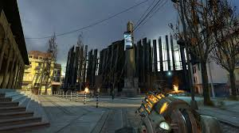
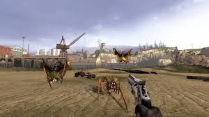

Half-Life 2 es un videojuego de disparos en primera persona desarrollado por Valve Corporation. Fue lanzado en 2004 como la secuela del aclamado Half-Life y es conocido por su innovador uso de la física y su narrativa inmersiva.

